OASIS · Nature Methods revision
Tsankov-panel re-clustering of OASIS Perturb-seq data
Reviewer: The perturb-seq clusters in the UMAPs do not seem to be very well separated. How robust are they? Are there any other categories that are enriched in other clusters, besides those highlighted in the text?
TL;DR. The clustering structure depends on which genes you cluster on — it's a feature of the design, not a bug. Re-clustering the Day 4 and Day 6 OASIS Perturb-seq datasets on the union of five Tsankov 2015 lineage panels (PL, EC, ME, EN, MS — pluripotency, ectoderm, mesoderm, endoderm, mesendoderm) reveals ~33 distinct partial-lineage states on Day 6, each defined by a single dominant lineage TF on top of a still-pluripotent core. Permutation enrichment (10 000 perms, BH-FDR α=0.05, NTC null) identifies FGF16, FGF4, ADM2, and CCL18 as the strongest cluster-defining ligand perturbations on Day 6. Day 4 has weaker but consistent signals.
Approach
Each of the five Tsankov 2015 panels is a curated list of TaqMan-validated lineage markers (Tsankov et al., Nat. Biotechnol. 2015, PMID 26501952). We took the union of the five panels (80 input gene calls, 79 unique after FOXA1 dedup), filtered to genes detected in ≥1% of cells per day (Day 6: 37 genes; Day 4: 27 genes), and re-ran the clustering pipeline on this biologically-motivated feature set in place of HVGs:
- Log-normalize on the full count matrix (
normalize_total(target=1e4)+log1p). - Subset to detected union genes, then z-score per gene against NTC cells only — the embedding reads as deviation from the unperturbed baseline.
- kNN graph (n_neighbors=30, Euclidean on z-scores), Leiden (resolution=1.0, igraph flavor), UMAP (min_dist=0.8).
- Per-cluster permutation enrichment: for each ligand perturbation, draw 10 000 size-matched samples from the NTC pool, compute observed vs. null cluster proportion, two-sided
(sum±1)/(N+1)p-values, BH-FDR α=0.05 across all perturbations within each cluster.
Per-cell panel "scores" are the mean of NTC-z-scored expression across each panel's detected genes. They serve as overlays on the unified UMAP — cells with high PL score are pluripotency-like, high ME score are mesoderm-leaning, etc.
Full Tsankov panels used (verbatim from the paper)
PL: HESX1, DNMT3B, IDO1, LCK, POU5F1, TRIM22, NANOG, CXCL5
EC: CDH9, DMBX1, EN1, LMX1A, TRPM8, MYO3B, OLFM3, PAX3, ZBTB16, SOX1, NOS2,
WNT1, NR2F1, NR2F2, PAX6, COL2A1, MAP2, POU4F1, SDC2, DRD4, PAPLN
ME: ODAM, HAND1, ABCA4, FOXA1, CDX2, SNAI2, FOXF1, PDGFRA, TBX3, BMP10, HOPX,
HEY1, FCN3, RGS4, HAND2, ESM1, CDH5, PLVAP, COLEC10, ALOX15, IL6ST, SST,
NKX2-5, KLF5, TM4SF1, GATA4
EN: CABP7, CDH20, FOXA1, RXRG, PHOX2B, POU3F3, HNF4A, HMP19, FOXP2, ELAVL3,
SOX17, CPLX2, GATA6, CLDN1, HHEX, FOXA2, NODAL, LEFTY1, EOMES, LEFTY2
MS: FGF4, T, GDF3, NPPB, NR5A2
Day 6 results
Unified UMAP — clustering and lineage scores
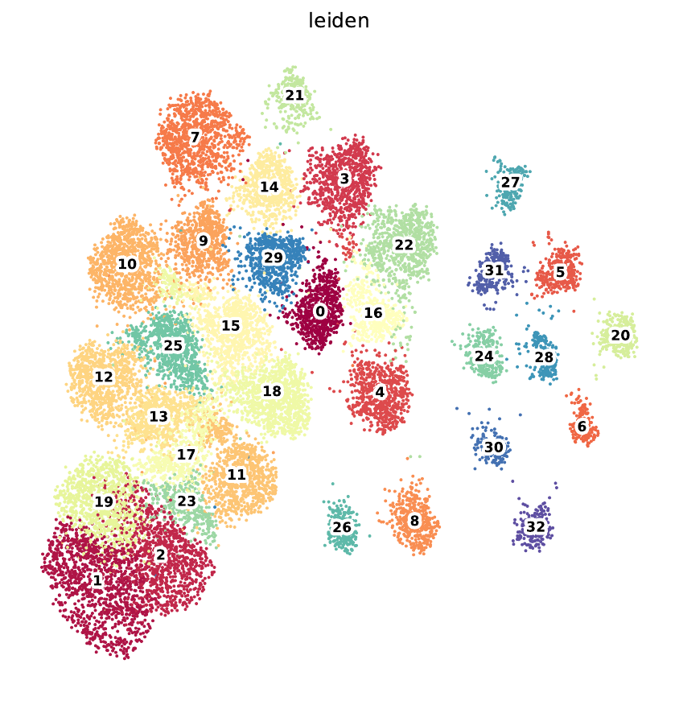
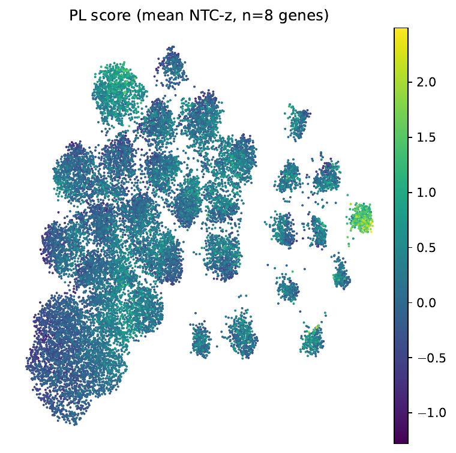
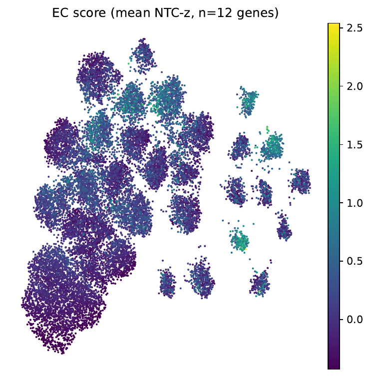
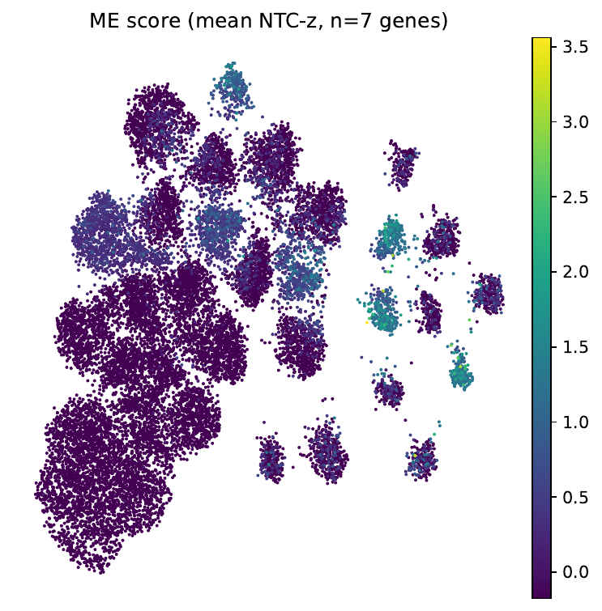
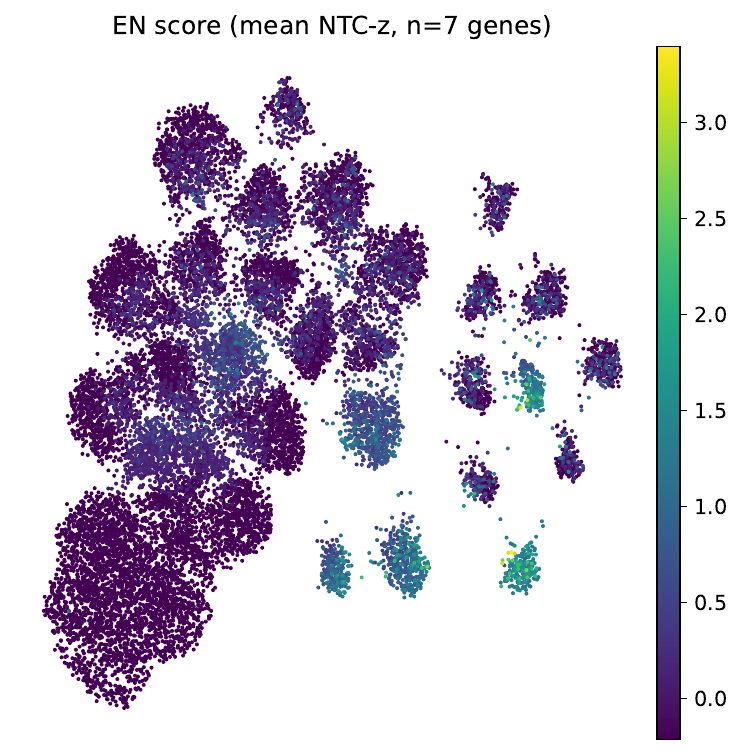
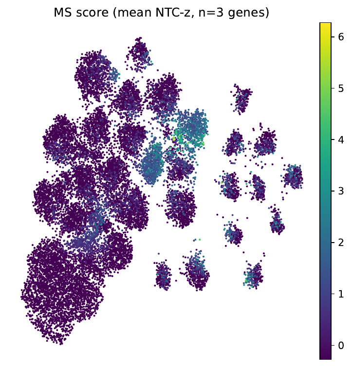
Are these clusters biologically distinct?
Yes — and the dotplot of every union gene against every cluster shows it directly. Each non-iPSC cluster has a single strong lineage-TF marker on top of an otherwise pluripotent gene-expression profile, indicating cells caught at the very earliest stage of lineage commitment driven by a specific ligand perturbation.
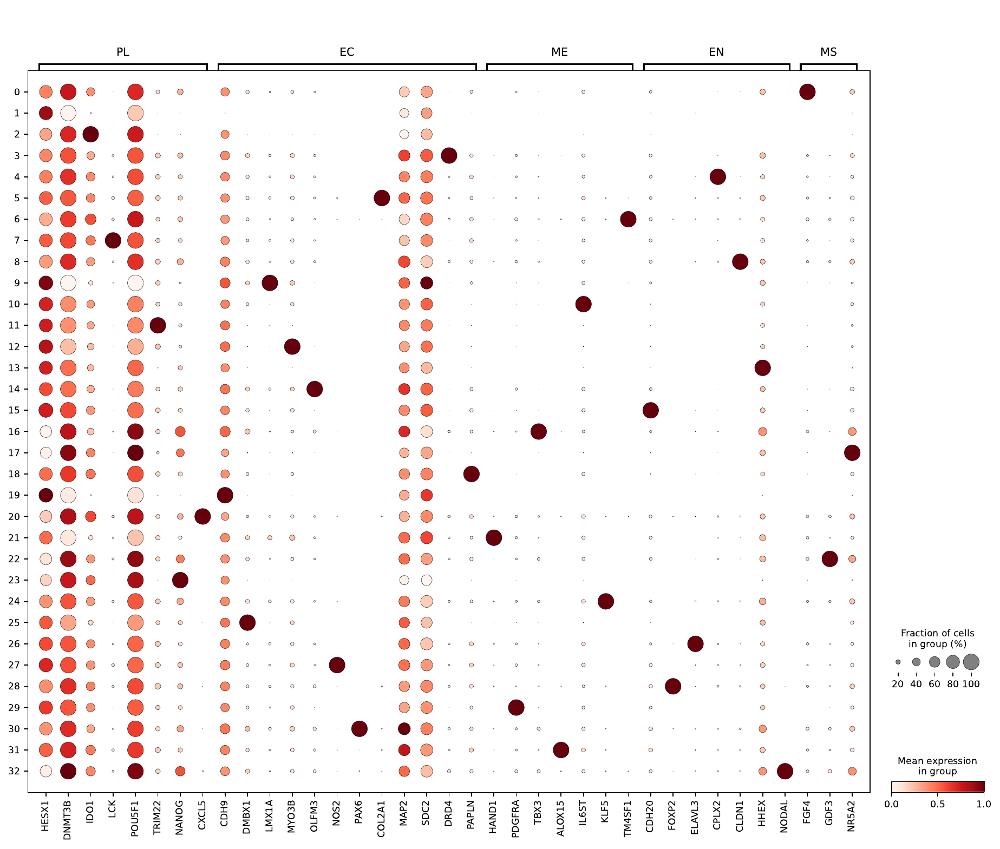
Significant ligand enrichments
Permutation test (10 000 perms, BH-FDR α=0.05, NTC pool as null, ≥20 cells per perturbation):
Per-cluster Δ% bar plots
For each cluster with at least one FDR-significant hit, the bar shows Δ% = (perturbation cluster proportion − NTC cluster proportion). Blue = enriched, red = depleted. With one ligand per cluster surviving FDR, these read as "one perturbation drives most cells of its kind into one cluster".
Day 4 results
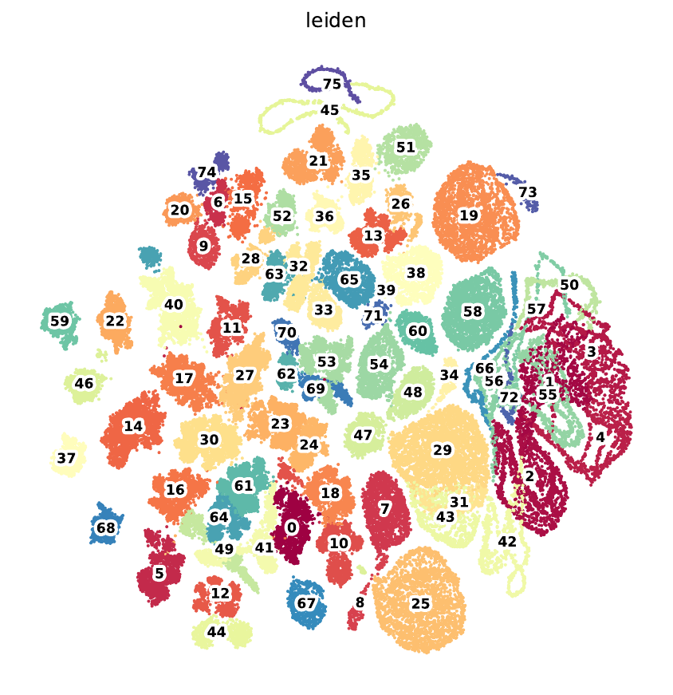
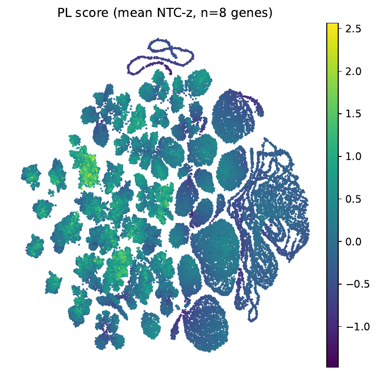
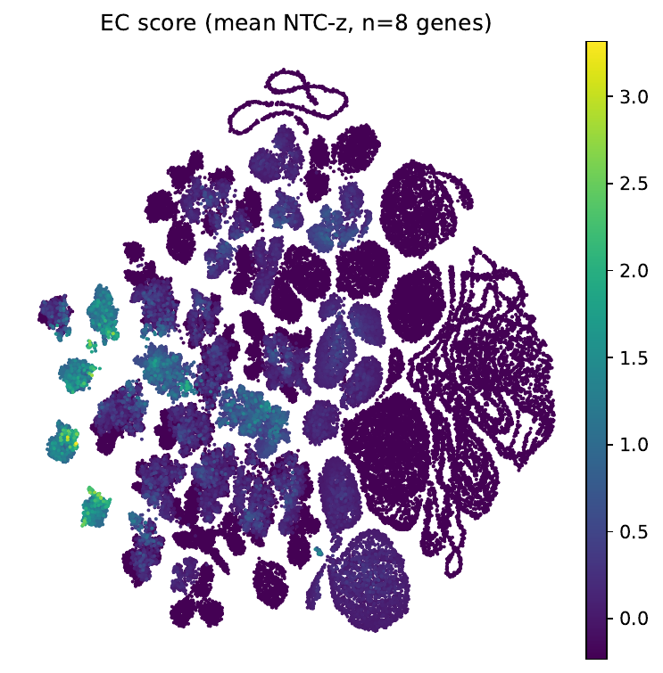
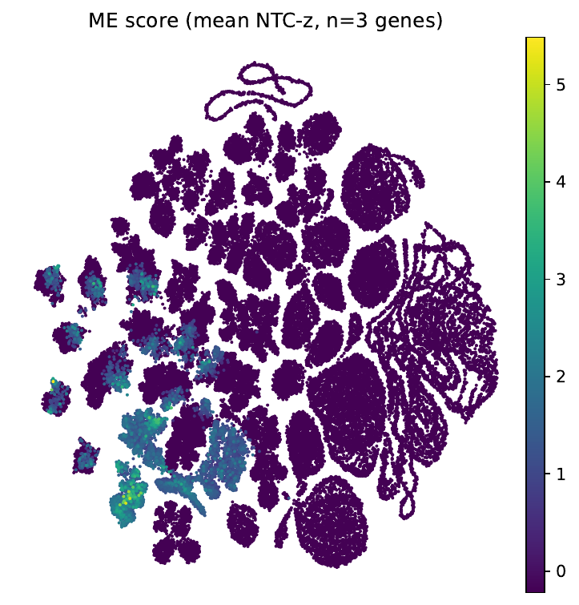
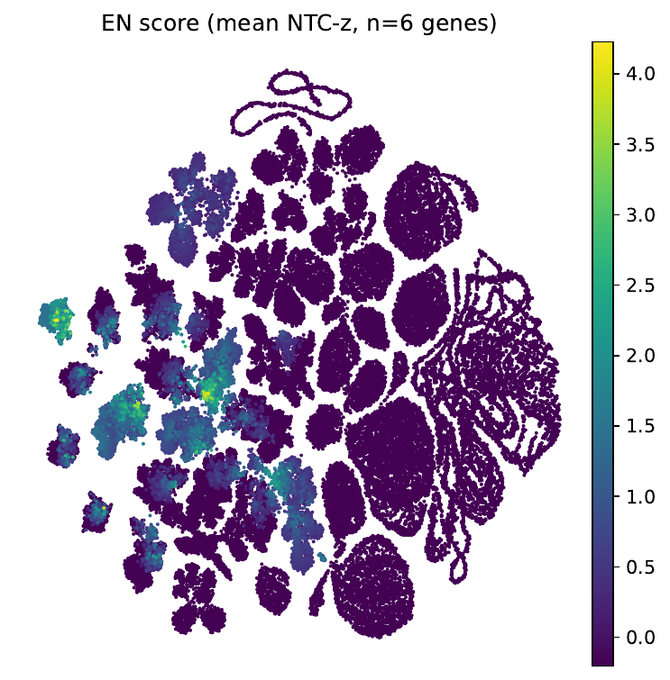
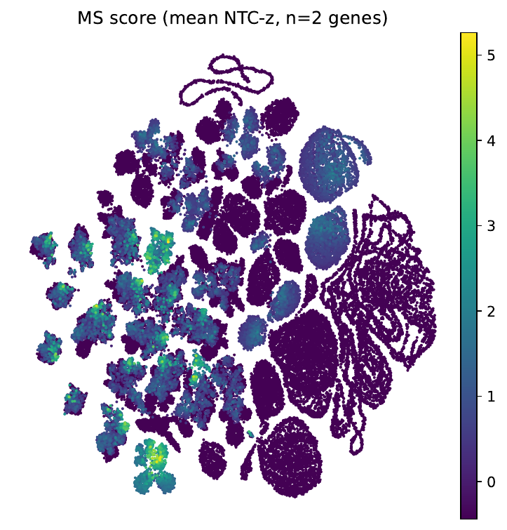
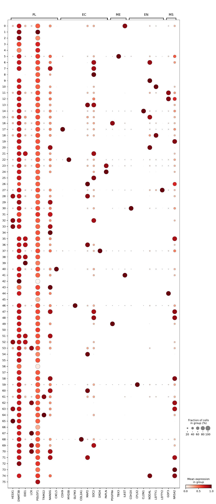
Significant ligand enrichments — Day 4
Caveats and methods notes
- Resolution choice (Leiden=1.0) is an aggressive partition. Lower resolutions collapse the partial-lineage clusters into broader buckets but obscure the per-ligand specificity that's the headline finding here. The dotplot confirms that each cluster is biologically distinct (single dominant lineage TF) — they're not noise-driven micro-clusters.
- NTC-anchored z-score is the only departure from the original HVG pipeline (which uses population-mean
sc.pp.scale). Anchoring to NTC makes "deviation from unperturbed baseline" the geometry of the embedding, which is more interpretable for a perturbation screen but is a second variable changed vs. the published clustering. - BH-FDR is per-cluster, across ~300–600 perturbations passing the ≥20-cell filter. Several clusters had near-significant hits (q ≈ 0.05–0.1) that are not shown.
- Random seed 42 throughout; results are byte-reproducible.